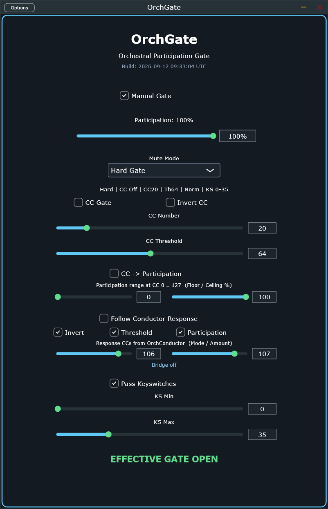

Per-track participation gate — decides whether this instrument plays at all right now.
note path · step 4liveOgat
Every note reaching this device either passes or doesn't — manually, by a genuine per-note probability, or by
listening to a CC from OrchConductor. It fails closed by default (silence until told
otherwise), the deliberate fail-safe fix for a real bug found live 2026-09-09: an open-by-default gate meant
every transport start left every instrument playing until a corrective CC happened to arrive in time.
One column, top to bottom: whether this instance plays at all (1–3), the binary CC gate (4–6), a graduated
density mode as an alternative to the binary gate (7), the OrchConductor response bridge (8–9), and keyswitch
handling (10–11). The green line at the very bottom is the one thing worth watching live.

1
2
3
4
5
6
7
8
9
10
11
1
Manual GatemanualGate
The hand-operated on/off. Effective gate is always manual AND (CC gate off, or CC gate open) — this alone can silence the instrument regardless of anything else on the panel.
default: On
2
Participationparticipation
0–100%
A genuine per-note-on probability, not a volume knob — at 40%, roughly 4 in 10 notes actually sound. Independent of the binary CC gate below.
default: 100%
3
Mute ModemuteMode
Hard Gate · No New Notes
Hard Gate cuts everything immediately, including notes already sounding. No New Notes lets already-sounding notes ring out and only blocks new ones — softer for a closing phrase.
default: Hard Gate
4
CC Gate / Invert CCccGateEnable · ccInvert
Turns on listening to an external CC as a second, binary gate condition (on top of Manual Gate, never instead of it). Invert flips which side of the threshold counts as open.
default: both Off
5
CC NumberccNumber
0–127
Which controller this instance listens to for the binary CC gate. OrchConductor's own per-instrument gate map is the usual source.
default: 20
6
CC ThresholdccThreshold
0–127
Value at/above which the CC gate reads as open (below Invert flips this).
default: 64
7
CC → ParticipationccToParticipation · ccPartMin/Max
A different use of the same incoming CC: instead of a hard on/off, its value maps across a Floor–Ceiling % range and becomes the live participation probability — a real density curve, not a threshold. Combine with the binary gate for "silent below threshold, then fade in."
Lets OrchConductor's broadcast overlay push Invert / Threshold / Participation away from your own settings by a deterministic, per-instance amount — off by default so a standalone OrchGate (host LFOs, no OrchConductor) is never affected. Each of the three targets can opt out independently.
Which CCs carry the bridge. Mode is a per-instance-seeded "chapter" — every OrchGate diverges (its own gate CC number is in the seed) but all shift together when OrchConductor steps it. Amount (0=off) scales how far the overlay pushes.
default: 106 / 107
10
Pass KeyswitchespassKeyswitches
Keyswitches inside the window below pass through regardless of gate state — a closed gate shouldn't strand the instrument on the wrong articulation. Watch for real destination notes numerically colliding with this window on low instruments (a real bug found 2026-09-09 on Bass Drum, note 35).
default: On
11
Keyswitch Min / MaxkeyswitchMin · keyswitchMax
0–127
The passthrough window itself — the ecosystem's shared source zone is 12–23, but this default (0–35) is deliberately wider to be safe out of the box.
default: 0 / 35
Real capture of the Standalone build. Status line reads live gate state — the fastest way to confirm what's actually happening without a DAW meter.
02
Watch This Live
EFFECTIVE GATE OPEN / CLOSED at the bottom of the editor is the one number that
folds every condition above (manual, CC gate, response overlay) into a single answer. If a track is
unexpectedly silent, check this line before anything else — it tells you whether OrchGate itself is the
reason.